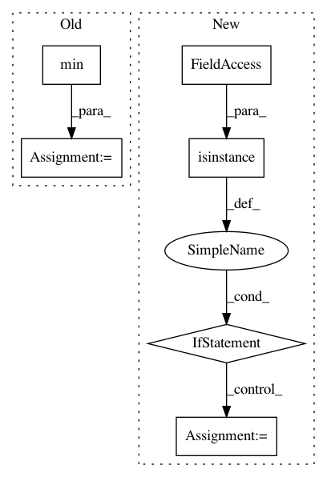

422678c8bf45574bb7c8a87ba434c455f9f7b877,magenta/music/chord_inference.py,,sequence_note_pitch_vectors,#Any#Any#,148
Before Change
end_frame = int(math.ceil(note.end_time / seconds_per_frame)) - 1
pitch_class = note.pitch % 12
start_frame = min(start_frame, num_frames - 1)
end_frame = max(end_frame, 0)
if start_frame >= end_frame:
x[start_frame, pitch_class] += note.end_time - note.start_time
After Change
A numpy array with shape `[num_frames, 12]` where each row is a unit-
normalized pitch class vector for the corresponding frame in `sequence`.
if isinstance(seconds_per_frame, numbers.Number):
// Construct array of frame boundary times.
num_frames = int(math.ceil(sequence.total_time / seconds_per_frame))
frame_boundaries = seconds_per_frame * np.arange(1, num_frames)
else:
frame_boundaries = sorted(seconds_per_frame)
num_frames = len(frame_boundaries) + 1
x = np.zeros([num_frames, 12])
for note in sequence.notes:
if note.is_drum:
In pattern: SUPERPATTERN
Frequency: 3
Non-data size: 6
Instances
Project Name: tensorflow/magenta
Commit Name: 422678c8bf45574bb7c8a87ba434c455f9f7b877
Time: 2018-07-26
Author: iansimon@users.noreply.github.com
File Name: magenta/music/chord_inference.py
Class Name:
Method Name: sequence_note_pitch_vectors
Project Name: bambinos/bambi
Commit Name: 5bb62768d064583aef9efaf5b0838878e11f71e3
Time: 2016-08-14
Author: tyarkoni@gmail.com
File Name: bambi/models.py
Class Name: RandomTerm
Method Name: _setup
Project Name: scikit-optimize/scikit-optimize
Commit Name: a225606e6bb4d402b6000e90b91e7acd8e068f88
Time: 2018-05-29
Author: stefano.cereda@moviri.com
File Name: skopt/plots.py
Class Name:
Method Name: plot_regret